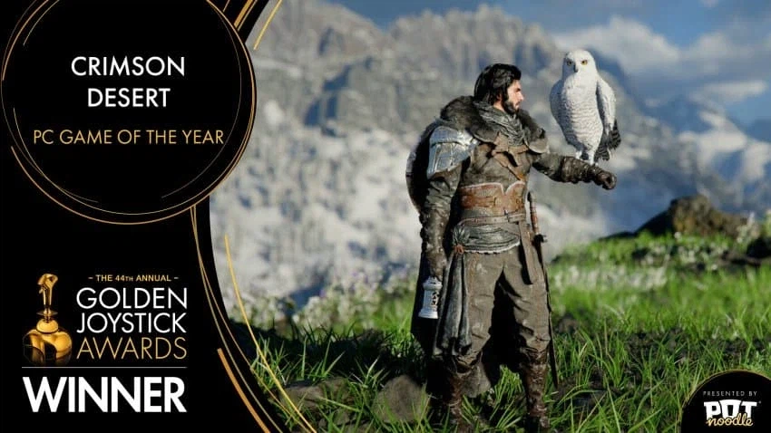
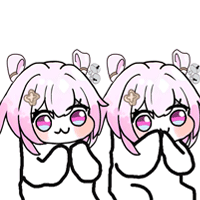

PC게임 GOTY 수상
올해의 게임에서는 3위를 기록
올해의 게임은 <바이오하자드 : 레퀴엠>
베스트 조연 - 프래그마타 다이애나
베스트 인디 게임 - 발하임
베스트 오디오 디자인 - 귀무자 검의 길
베스트 확장팩 - 둠 다크에이지 레벨레이션
베스트 얼리억세스 - 서브노티카 2
베스트 스토리텔링 - 디스패치
베스트 리메이크/리마스터 - 위쳐 3 리마스터
베스트 비주얼 디자인 - 컨트롤 레조넌스
베스트 기대작 - 위쳐 4
올해의 스튜디오 - 캡콤
